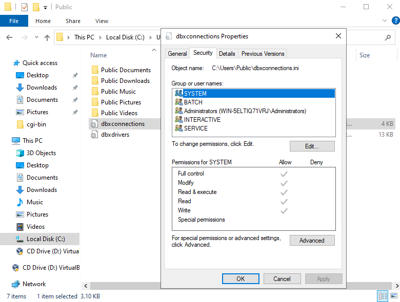

Report Manager Web Server
Installation
Installing Report Manager web server in Microsoft Internet Information services.
- Install Internet Information Services.
-
Windows 10. Add or remove features. Internet Information Services. Add also CGI and ISAPI Extensions.
-
Windows Server
-
Add roles or features. Add Web Server Role including Management tools. Click Add features
-
Click Next until Role Services and add CGI and ISAPI Extensions.
-
Test the installation accessing http://localhost using any Internet Browser (Edge, Chrome...).
-
Open Internet Information Services (IIS) Manager
-
Copy the executables into the Default Website
-
Explore the website
-
Create cgi-bin folder and copy the files repwebserver.dll for ISAPI and/or repwebexe.exe for CGI.
-
Enable the ISAPI and CGI applications at server level.
-
Allow CGI and/or ISAPI at handler Mappings. This can be done at server level or website level.
-
Double click on Handler Mappings.
-
Select the ISAPI or CGI handler mapping and set execute permission.
-
You can test the installation by calling the application with /version command:
http://localhost/cgi-bin/repwebserver.dll/version
This will give you info about the configuration file the report web server
is using, including the location of the configuration file and the system user name running the Report Server.
-
Copy and add permissions for database configuration files.
-
Copy the configuration files for databases (dbxconnections.ini and dbxdrivers.ini) into the folder indicated by /version command.
The files could be located at hidden folder C:\Users\YourUserName\AppData\Local
-
Give access to files to the user executing IIS Service. The user executing the ISAPI or CGI extension appear in the end of the /version command
by default ISUSR but depends on the application pool assigned to the website.


-
Chek again the /version command and see if the files are now accesible.

For security reasons you can't add/remove users or aliases from the web. To
configure users and aliases you can use repserverapp(xp) and repserverconfig(xp),
execute repserverapp as a privileged user (root or Admin) so it opens the system
wide configuration file and have write permissions over it, then execute repserverconfig(xp)
and add aliases and users. You can see the generated file location in reportserverapp
form, this configuration file will be used by the web report server.
http://localhost/cgi-bin/repwebserver.dll/login
Some tricks will help you otsetup the web server:
- Make sure the user executing Internet Information Services have read privileges
for the directories containing reports
- After changing some configuration make sure to restart Internet Information
Services or else use repwebexe.exe instead of repwebserver.dll
- If an error about dbxdrivers appear copy dbxdrivers.ini and dbxconnections.ini
files to the path the error
indicates or execute /version command to see the path.
- Check the permissions of the above files for the user executing IIS. User executing the Report Server is shown at /version command
- If your machine is a multiprocessor machine or a hyperthreading technology
machine may be rebwebexe.exe will give you the better performance than repwebserver.dll if you execute multiple reports at once
Installing Report Manager web server in Linux Apache
Usually you copy the application (rpwebexe.bin and repwebexe) into a directory
with execution privileges, in Suse 7.3, is /usr/local/httpd/cgi-bin.
You must place the configuration file of the server in /etc/reportmanserver
file. You can generate it with the tcp server application
and the tcp server configuration.
This file will contain user information (default user Admin with blank password)
and the report directories. A simple file can be:
[ALIASES]
SAMPLE=/var/reports
User running apache process must have read privileges of this directory.
The database configuration files must be placed in directory /usr/local/etc,
this files are:
dbxconnections.conf, dbxdrivers.conf
There information about database location, user names and passwords are stored,
if you use the designer application (repmand) it usually reads and writes this
configuration files to /home/username/.borland directory, you can copy the files
from there to the correct directory.
Finally the report server application must link to required libraries, you
should place this libs (provided with the report designer) in /opt/kylixlibs
directory, because repwebexe.bin application launcher add this directory to
the path, otherwise you can add other directory to /etc/ld.so.conf file and
run ldconfig command.
To test the server you can write:
http://localhost/cgi-bin/repwebexe.bin/version
It will say you the version and the configuration file location, then you can
test the configured reports:
http://localhost/cgi-bin/repwebexe.bin/login
Thousand separator and other locales
Most linux distros use a diferent locale for apache, you can check environment
variables with the /version command and see the resulting decimal separator,
thousand separator etc, you can override it by placing for example a .htaccess
file in cgi-bin directory where repwebexe is placed, with this content:
SetEnv KYLIX_DEFINEDENVLOCALES yes
SetEnv KYLIX_THOUSAND_SEPARATOR .
SetEnv KYLIX_DECIMAL_SEPARATOR ,
SetEnv KYLIX_DATE_SEPARATOR /
SetEnv KYLIX_TIME_SEPARATOR :
Using a log file to track web report server activity
You can specify a log file to write information about executed reports. To
enable the log file edit your configuration file and insert:
[CONFIG]
LOGFILE=/var/log/reportmanweb.txt
Make sure the user executing repwebexe application inside Apache or IIS has
write privileges over this file.
Serve customized html files
To serve alternative html files, you must configure where the html files are
and use the replacement strings contained in the models. You will find the html
original files (models) in the cvs development tree.
To configure place in the configuration file
[CONFIG]
PAGESDIR=c:\inetpub\wwwroot\reportserver
Configuring environment variables in Apache using Oracle
You can pass environment varaibles to any cgi with apache, for example oracle
needed ones.
---------------------------------------------------------------------
PassEnv directive
Syntax: PassEnv env-variable [env-variable] ...
Context: server config, virtual host, directory, .htaccess
Override: FileInfo
Status: Base
Module: mod_env
Compatibility: PassEnv is only available in Apache 1.1 and later.
Directory and .htaccess context is available in Apache 1.3.7 and
later.
Specifies one or more environment variables to pass to CGI scripts
and SSI pages from the environment of the shell which invoked the
httpd process. Example:
PassEnv LD_LIBRARY_PATH
---------------------------------------------------------------------
In addition: You must set the Oracle environment
(ORACLE_HOME,PATH,LD_LIBRARY_PATH) inside the init httpd script
(/etc/init.d/httpd) plus add the following directives inside the
configuration file /etc/httpd/conf/httpd.conf:
PassEnv ORACLE_HOME
PassEnv PATH
PassEnv LD_LIBRARY_PATH
To generate advanced graphics (charts) you must use the alternative repwebexex.
The apache server service must start in runlevel 5, and the Xserver must be running.
The environment variable DISPLAY must be defined to :0 in he apache runtime.
Some security settigs should be disabled, the fastest way is to disable the firewall and then execute the comand to
enable access to the Xserver: xhost +